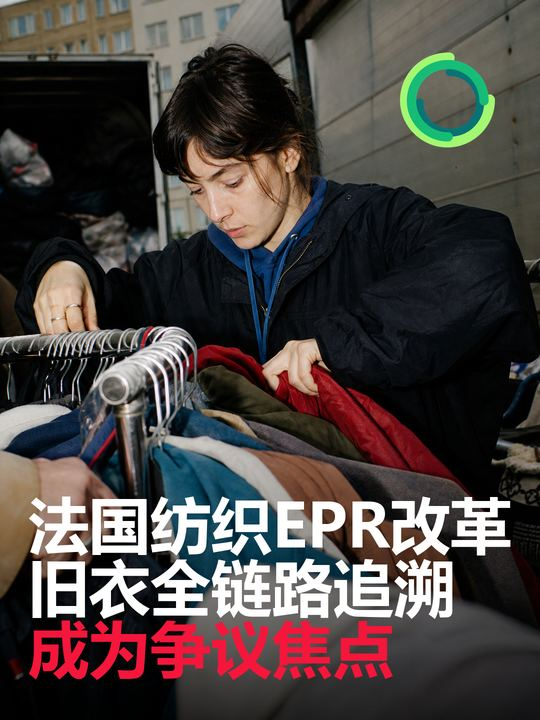
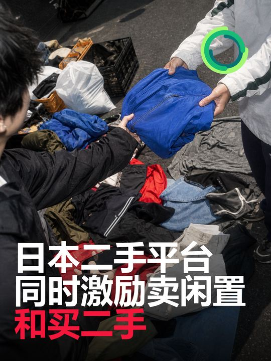

最近72小时没有新的大型回收产能、并购或经核实的价格异动，真正值得关注的是“规则、数据和出口”同时前移：法国纺织品EPR改革把回收来源、分拣量、再使用量、库存和最终去向的全链路追溯推到争议中心；二手平台开始同时激励供给与购买，并尝试量化减排；分拣、拆辅料和二手准备技术正在被纳入同一套工业图谱。对铛铛一下而言，下一阶段的竞争力不只是收衣量，而是能否把每批旧衣的来源、等级、去向和结果变成可核验的数据产品。
总结今日结论
美国Vinted把美国列为重点市场，早期测试显示用户增长
- 发生日期： 2026年7月28日
- 国家/地区： 美国
- 事实摘要： Bloomberg采访中，Vinted首席执行官Thomas Plantenga表示，美国市场是公司近期重点，早期测试结果“令人鼓舞”。报道援引Wells Fargo 7月研究称，Vinted于2026年1月进入美国后，第二季度美国日活同比增长超过六倍。Vinted官方此前已确认在纽约启动美国服务。
- 产业链环节： C2C二手流通、平台支付、跨区域物流与用户获取。
- 影响判断： 中重要性。 六倍增速基数和绝对用户量未公开，且来自媒体转述的分析师报告，不能据此判断市场份额；但欧洲头部二手平台进入美国，说明跨境平台仍在争夺高频二手服装交易入口。
- 与铛铛一下的关联： 国内回收平台可关注“回收端用户”与“二手购买端用户”是否能够在同一账户体系内连接。先用城市级小样验证再售品的上架率、成交周期和获客成本，不宜只以回收量判断渠道价值。
- 原始来源： Bloomberg报道授权转载、Vinted美国市场官方背景
法国法国拟按商品范围和维修激励征收超快时尚生态惩罚费
- 发生日期： 2026年7月28—30日；咨询于7月30日结束
- 国家/地区： 法国
- 事实摘要： 法国政府拟修改纺织品、家纺和鞋类EPR收费规则，以商品范围宽度和维修激励计算D系数，其中维修激励指标权重为50%；D系数不高于0.8的产品将按品类承担惩罚性生态费用。法律要求相关机制自2026年9月1日起生效。咨询意见集中要求：非欧盟平台应同等受控，计算与申报必须可核验，并避免仅以维修价格与新品价格之比代替真实耐用性。
- 产业链环节： 品牌投放、平台监管、生态调节费、耐用与可维修设计。
- 影响判断： 中高重要性。 惩罚机制已有法定实施日期，但本次公开的是配套规则草案；门槛、算法和核验方法仍可能调整，不能表述为最终费率已经落地。
- 与铛铛一下的关联： 品牌合作报告可增加“可维修率、维修后再售率、平均延寿周期”字段，帮助合作方证明其产品不仅被回收，而且优先进入维修和再使用。
- 原始来源： 法国生态转型部门配套规则公众咨询页
日本日本制服企业把退役制服压制成板材配件
- 发生日期： 2026年7月27日
- 国家/地区： 日本
- 事实摘要： 制服企业Karsy Kashima将停产后的自有制服裁切、叠层，并用NUNOUS工艺通过热和压力压制为板状材料，再制成行李牌和名片夹。企业同时向客户提供退役制服的升级再造方案。
- 产业链环节： 企业制服回收、拆解、材料化利用、文创及办公用品。
- 影响判断： 中低重要性。 这是企业案例，未披露处理规模、成本或减排数据；但对成分复杂、难以纤维再生且带有组织记忆的制服，板材化提供了一个高辨识度的小批量出口。
- 与铛铛一下的关联： 可面向企业客户建立“制服退出方案”：先筛出可再穿着品，再从有纪念意义或视觉统一的批次中选择少量做品牌物件，其余进入材料化处理。
- 原始来源： Karsy Kashima企业公告
品牌品牌、平台与竞品
- Vinted： 以跨区域扩张验证二手平台能否在美国复制欧洲网络效应。
- Rakuma： 将出品和购买绑定，并尝试把交易行为转换为环境影响数据。
- Karsy Kashima： 从销售制服延伸到退役后的材料化出口，形成企业客户全生命周期服务。
- 对铛铛一下的启示： 平台产品应同时覆盖回收入口、后端去向和结果数据；只提供投放入口，较难形成品牌客户的长期续约理由。
贸易价格、供需、贸易与渠道
- 价格与供需： 暂无经权威来源核实的再生纤维即时价格、旧衣收购价或出口量重要变化。
- 渠道信号： Texworld NYC将库存面料单列为采购专区，显示成分和批量可描述的存量材料正被组织成独立B2B品类；目前没有公开成交数据。
- 跨境规则： 法国EPR草案强化非法废纺跨境转移检查，同时行业要求保障经专业分拣、可直接再穿的合法旧衣贸易。未来出口竞争会更依赖分拣证据和批次文件。
跟踪值得持续跟踪的信号
- 法国最终法令是否保留收集、转运和汇集经营者直接签约要求，以及不同规模经营者的实施时间。
- 法国超快时尚D系数算法、惩罚金额和非欧盟平台核验方式是否在咨询后调整。
- Vinted是否披露美国绝对用户数、成交总额、获客成本和物流覆盖，而不只是增长率。
- Rakuma活动结束后是否公布实际减排、二手成交量及计算边界。
- Refashion技术图谱中的拆辅料和二手准备方案是否进入新增产线，并披露速度、良率和单位成本。
- 中国真菌纺织材料的耐洗、耐磨、寿命和规模化测试结果。
- 企业制服板材化能否从纪念性小件扩展到稳定采购，而不依赖一次性品牌项目。
速览今日最值得关注的五条变化
- 【高】法国纺织品EPR改革集中征求意见，全链路追溯成为核心争议。7月29日，Refashion、Decathlon、Petit Bateau及行业组织集中提出：若部分收集、转运和汇集经营者不与生态组织直接签约，旧衣来源、数量、再使用量、库存和最终去向可能形成数据盲区。
- 【中高】法国拟用“商品范围宽度＋维修激励”计算超快时尚惩罚性生态费。草案拟对D系数不高于0.8的产品按品类加收生态费用，维修激励指标权重为50%；规则仍在咨询，算法和执行细节尚未最终确定。
- 【中】Vinted披露美国市场早期测试进展，二手平台竞争继续跨区域扩张。Bloomberg报道援引公司及Wells Fargo资料称，Vinted把美国视为近期重点市场，2026年第二季度美国日活同比增长超过六倍；该增速来自媒体转述的分析师报告，不等同于平台审计数据。
- 【中】Rakuma同时激励“出品＋购买”，并为活动设置8吨CO₂减排目标。日本平台把二手供给、购买转化和环境影响量化放在同一活动中；8吨是活动目标，不是已经实现的结果。
- 【中】Refashion更新欧洲旧纺织品分拣与二手准备技术图谱。新版研究首次把鞋类和“面向二手流通的准备”纳入范围，将精细复分、拆辅料、拆解与二手商品准备放在同一张产业地图中。
美国Texworld NYC把库存面料单列为采购专区
- 发生日期： 2026年7月29日
- 国家/地区： 美国
- 事实摘要： Texworld NYC于7月29日至31日在纽约Javits Center举行，主办方设置“Deadstock”专区，集中展示过剩、剩余及再利用面料，并通过B2B配对连接品牌和零售买家。主办方称库存面料是买家高频询问的类别之一；这一说法属于展会方观察，不是独立市场统计。
- 产业链环节： 库存面料再流通、B2B采购、品牌与供应商渠道。
- 影响判断： 中低重要性。 展会专区不能证明成交量已经扩大，但库存材料从零散供应进入独立采购分类，说明“可用存量”正在成为更明确的原料渠道。
- 与铛铛一下的关联： 可把成分、幅宽、颜色和批量稳定的库存布料与居民旧衣分开建档，形成面向设计师、样衣室和小批量品牌的B2B材料清单。
- 原始来源： Texworld NYC官方Deadstock专区、展会官方公告
美国联邦及州级纺织品EPR在本检索窗口内暂无重要新增。
法国／欧洲Refashion更新欧洲分拣、拆辅料和二手准备技术图谱
- 发生日期： 2026年7月28日
- 国家/地区： 法国／欧洲
- 事实摘要： 法国纺织品EPR生态组织Refashion更新欧洲工业解决方案研究。新版在纺织品之外纳入鞋类，并首次覆盖“面向二手流通的准备”，梳理精细复分、纽扣和拉链等辅料去除、拆解以及二手商品准备四类环节，信息基于2025年末至2026年初的企业访谈。
- 产业链环节： 中游精细分拣、拆辅料、拆解；下游二手准备和纤维再生前处理。
- 影响判断： 中重要性。 这是技术与参与者图谱更新，不是新增产能或单项技术突破；其价值在于把“为再售做准备”和“为再生做前处理”放进同一套工业分流逻辑。
- 与铛铛一下的关联： 可据此重做分拣工序表：先判断能否再售，再判断是否值得维修或拆辅料，最后进入纤维再生或其他利用，并为每一步记录单位人工、损耗和产出价值。
- 原始来源： Refashion官方发布、更新研究PDF
除上述法国动态外，欧盟层面及英国本土旧衣回收制度在本检索窗口内暂无重要新增。
韩国Misto Korea把低利用衣料制成450个女性用品袋
- 发生日期： 2026年7月24日交付；7月27日发布
- 国家/地区： 韩国
- 事实摘要： Misto Korea与公益机构Giving Plus、社会企业Touch4Good及Kleannara合作，把低利用衣料制成450个升级再造女性用品袋，并配套生活用品，定向发放给首尔城北区450名弱势女性青少年。
- 产业链环节： 企业存量衣料、社会企业加工、小件产品、定向公益分发。
- 影响判断： 低至中重要性。 项目规模有限，也未披露材料利用率和成本；但其“指定受益人＋指定产品＋固定数量”的结构，比笼统捐赠更容易核验社会结果。
- 与铛铛一下的关联： 公益项目可以从“捐了多少衣服”转向“解决什么具体需求”，并同步记录投入衣料、成品数量、受益人数和未利用余料去向。
- 原始来源： Misto Holdings官方公告
日本、韩国在政府级纺织品回收制度及大型再生产能方面暂无重要新增。
技术技术、材料与循环创新
- 近期重点： Refashion把精细复分、拆辅料、拆解与二手准备放进同一工业图谱；Karsy案例展示了复杂制服的板材化小批量出口；中国科学院的真菌片材则属于面向未来的替代材料。
- 边界判断： 本窗口内未发现新的纤维到纤维工业化产能投产。前沿材料原型、技术图谱和企业升级再造案例均不能替代规模、良率和成本数据。
舆情舆情、消费者与公益
- 消费者激励： Rakuma把“卖出闲置”和“购买二手”放在同一活动条件中，说明平台开始同时管理供给与需求，而不是只追求投放量。
- 公益结果： Misto Korea项目用成品数量和受益人数描述结果，为旧衣公益项目提供了比“回收若干件”更清晰的沟通模板。
- 社区参与： 美国Fridley市在7月27—28日把衣物交换、捐赠和破损纺织品回收放在同一活动中，体现“先再穿着、后材料回收”的分流顺序。City of Fridley官方页面
中国中国科学院团队开发可修复的真菌“活体纺织材料”
- 发生日期： 2026年7月28日；论文于7月25日发表
- 国家/地区： 中国
- 事实摘要： 中国科学院深圳先进技术研究院团队利用蛹虫草菌丝制成无需额外支架或胶黏剂的柔性片材，可裁剪、缝制，并能局部再生、修复缺损。研究报告其表面水接触角约145°，具有疏水和自清洁特征，团队完成了裙装原型。
- 产业链环节： 替代材料研发、纺织设计、可降解处置。
- 影响判断： 中低重要性、前沿原型。 这不是旧衣回收技术，也未进入规模化服装生产；耐磨、耐洗、长期稳定性和量产成本仍待验证，但它显示纺织材料开始把“可生长、可修复、可降解”写进设计阶段。
- 与铛铛一下的关联： 可把此类材料列入“新材料的回收识别”观察清单。若未来进入消费品，回收平台需要提前判断其与传统纤维混投、分拣和末端处理的兼容性。
- 原始来源： 中国科学院深圳先进技术研究院、Nature Research Highlight
除上述前沿材料研究外，中国旧衣投放、分拣、再生纤维项目建设及二手流通在本检索窗口内暂无重要新增。

法国法国纺织品EPR改革把旧衣全链路追溯推到争议中心
法国纺织品EPR改革把旧衣全链路追溯推到争议中心
- 发生日期： 2026年7月29日；公众咨询期为7月8日至31日
- 国家/地区： 法国
- 事实摘要： 法国政府就纺织品、家纺和鞋类EPR改革法令草案征求意见。草案涉及生产者定义、成本承担、旧纺织品防污染与分类、经营者同生态组织签约、跨境转移检查及非法转移认定。7月29日，Refashion、UFIMH、FEVAD、Decathlon、Petit Bateau等集中指出：若部分收集、转运或汇集经营者无需直接签约，旧衣来源、各投放点数量、再使用量、库存和最终去向可能失去完整追溯。FEDERREC支持打击非法废纺出口，同时要求不要误伤经专业分拣、可直接再穿的合法旧衣贸易。
- 产业链环节： 生产者责任、收集、转运、分拣、数字追溯、二手出口。
- 影响判断： 高重要性。 目前仍是草案和公众意见，不是最终法规；但争议说明欧洲监管正在从“回收多少”转向“谁收、从哪里来、如何分、去了哪里”的逐批数据核验。
- 与铛铛一下的关联： 应优先建立批次级数据链：投放点、承运方、入库重量、分拣损耗、再穿着数量、库存天数、材料化数量、接收方和证明文件。品牌客户未来更可能为可核验数据付费，而不是只为回收动作付费。
- 原始来源： 法国生态转型部门公众咨询页

日本Rakuma同时激励二手出品与购买，并设置8吨CO₂目标
Rakuma同时激励二手出品与购买，并设置8吨CO₂目标
- 发生日期： 2026年7月27日
- 国家/地区： 日本
- 事实摘要： 楽天Rakuma启动“Reuse Day”挑战，活动持续至8月31日。用户须在指定类别完成至少一次出品和一次购买，才有机会获得优惠券；服装相关类别包括女装、男装和母婴童装。平台将参考日本环境省Deco-katsu数据库估算活动交易带来的减排，并以合计8吨CO₂为目标。
- 产业链环节： C2C二手流通、供需激励、用户运营、减排量化。
- 影响判断： 中重要性。 8吨是目标而非成果，且部分商品无法计算；但“供给和购买同时达标”比只奖励投放更接近真实循环，也能避免平台只有大量上架而缺少成交。
- 与铛铛一下的关联： 可设计一次“双行为”测试：完成旧衣回收后，再浏览或购买一件二手商品，才获得完整积分；同时区分“回收重量”和“实际再售件数”，避免把收集量直接等同于减排。
- 原始来源： 楽天集团官方公告
政策政策法规与标准
- 确定事实： 法国纺织品EPR改革法令及超快时尚生态费配套规则仍处于公众咨询阶段；超快时尚惩罚机制已有2026年9月1日的法定实施要求。
- 主要争议： 回收经营者是否必须直接同生态组织签约、跨境旧衣与废物如何区分、平台数据如何核验，以及维修激励是否真正反映产品耐用性。
- 中国、美国、日本、韩国： 本检索窗口内暂无新的全国性或联邦级重要规则。
资本资本、并购与项目建设暂无重要新增
暂无重要新增。
最近72小时内未发现由企业、投资机构或主流财经媒体确认，且与旧衣回收、纺织再生直接相关的重要融资、并购或大型项目开工信息。
建议对铛铛一下的影响与可执行建议
- 本周确定一套批次追溯最小字段。至少记录来源点位、交接时间、承运方、入库重量、品类、品相、分拣损耗、再售件数、材料化重量、库存天数、接收方和证明文件。
- 把“回收量”和“循环结果”拆开呈现。品牌报告同时给出收集重量、可再穿率、实际售出或转赠率、材料化率和暂存量，避免把进入仓库直接等同于完成回收。
- 做一次“双行为激励”小测试。选择一个城市，让完成回收且浏览、交换或购买一件二手商品的用户获得额外积分，比较其复访率和真实成交率。
- 建立企业制服的三级出口。A级清洁后再穿着，B级维修或拆件，C级从有品牌记忆的批次中选择少量做板材化纪念物，其余按材料进入再生或其他利用。
- 为B2B存量面料单独建库。不与居民旧衣混合展示，按成分、颜色、幅宽、可供数量和批次稳定性形成材料清单，测试设计师和小品牌需求。